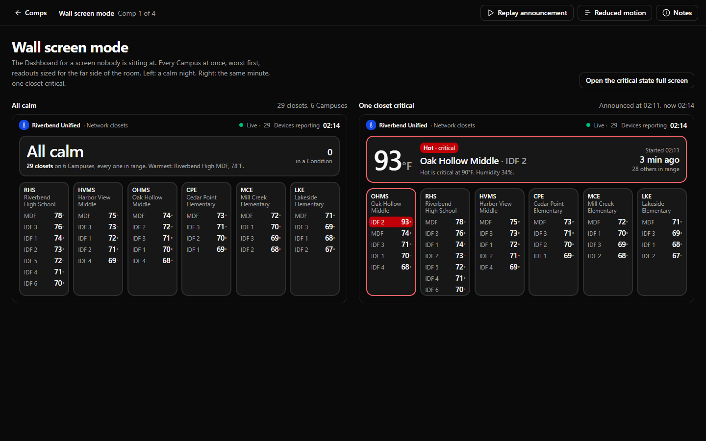
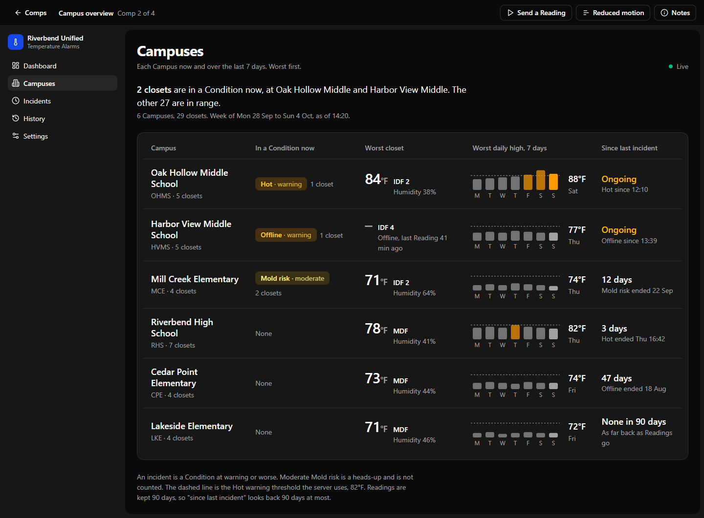
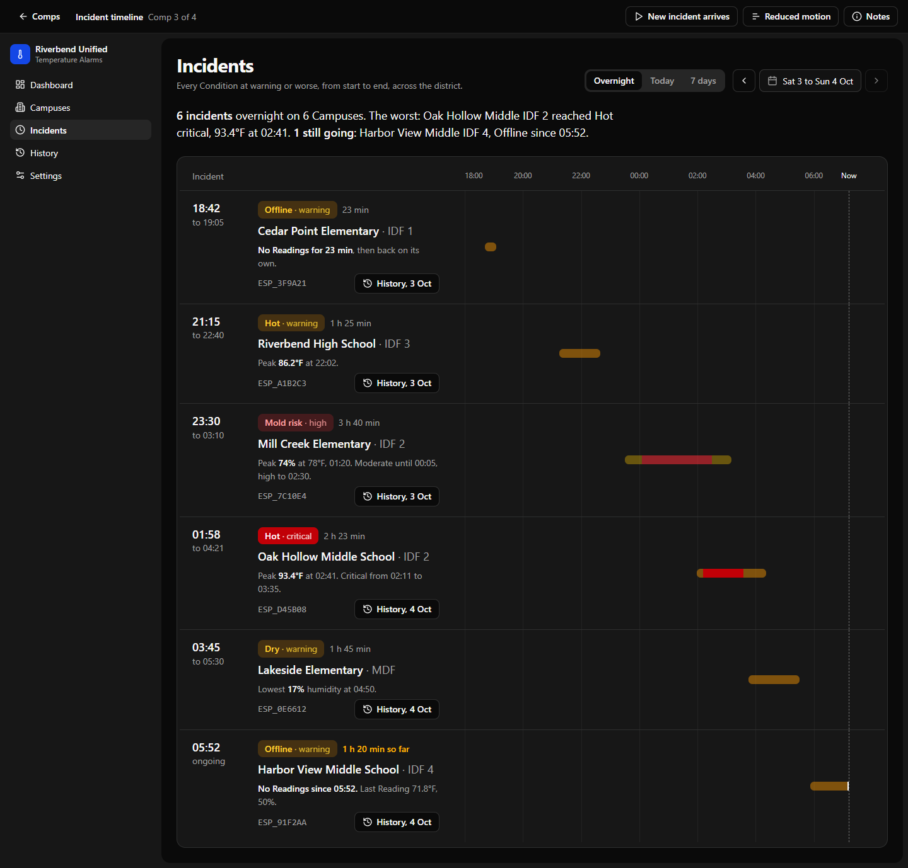
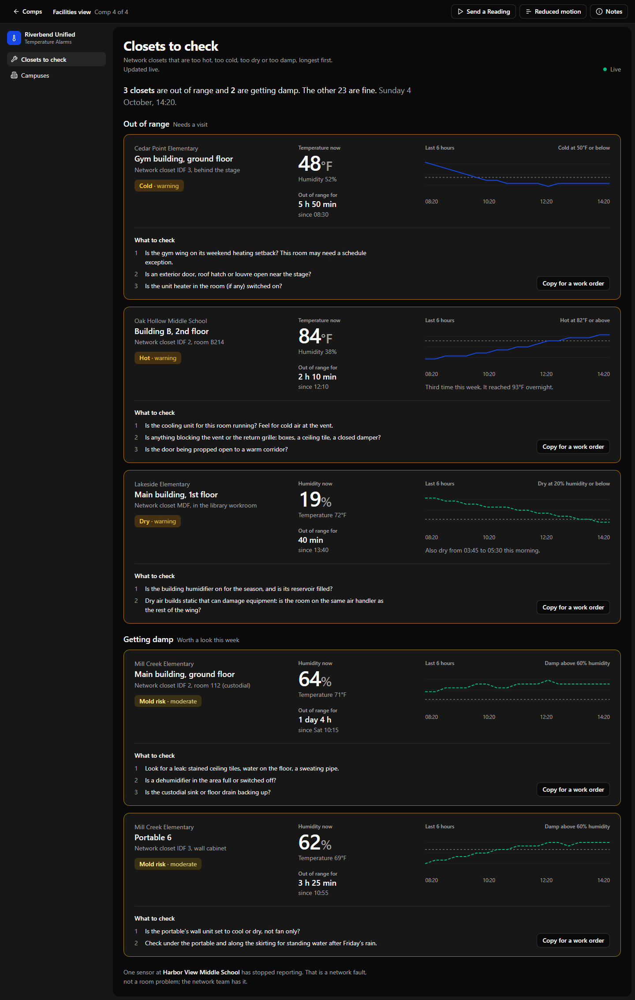

Four screens, four possible audiences
PRODUCT.md has an open decision: someone beyond the network technicians now uses the site, and nobody has said who. Each comp below designs for one candidate, in the product's own Night Shift Console look, so the choice of audience can be made by looking. Pick the audience first; the screen follows.

Wall screen modeNOC wall screen
Every Campus as a column, worst first, readable across the room. A new Condition replaces the "All calm" sentence once, without blinking.

Campus overviewIT leadership
One row per Campus: Conditions now, the worst closet, a 7-day chart of each day's worst high, and days since the last incident.

Incident timelineTechnicians, mornings
What happened overnight: each incident as a sentence with its numbers, and as a span on a shared 18:00 to 08:00 ruler.

Facilities viewHVAC and facilities
Hot, Cold, Dry and Mold risk by building and room, how long each has been out of range, its trend, and what to check.
Reading the comps
Each comp has a Notes button (off by default) with its audience, job, key decision, and the DESIGN.md rules it relies on or would change. The play button runs the comp's signature motion once; Reduced motion shows the alternative. All campuses, closets, Devices and Readings are fictional.